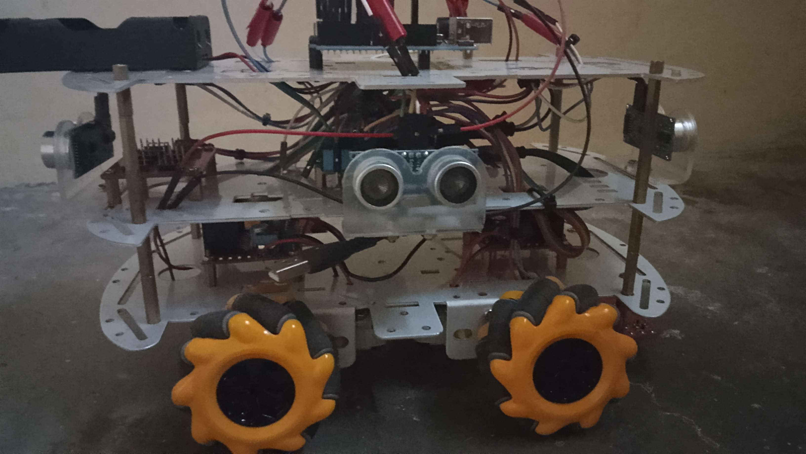
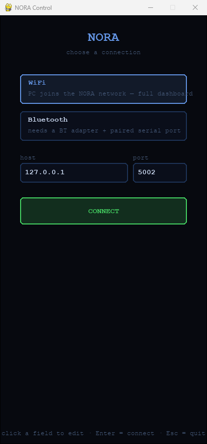
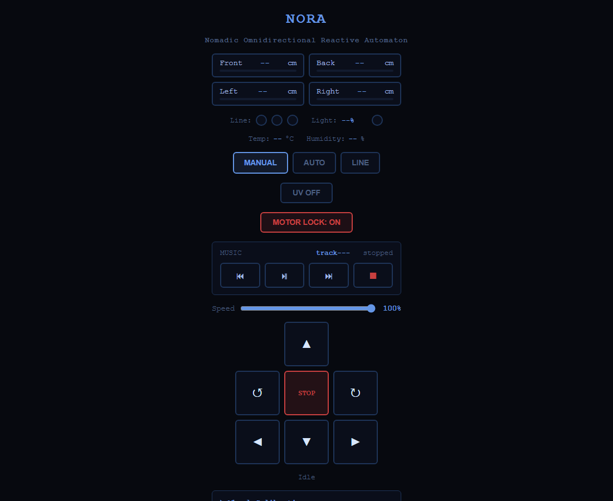

Overview
Any direction, no turning
Omnidirectional
Mecanum wheels let her drive, strafe and turn in place.
The fleet's network
She runs the NORA access point and the fleet registry on port 5000, so no router is needed.
Four-way braking
HC-SR04 sensors front, back, left and right block any drive command that would hit something, with a buzzer warning.
MP3 player
Play, skip, repeat and volume from the web, the remote or the controller. A single clap starts the music.
Environment
Temperature and humidity (AHT10), ambient light, and a 3-channel line sensor.
UV light
A UV LED that can be off, on or blinking.
Hardware
What she's built from
- 01 ESP32 (ACEBOTT QA007 Max controller board)
- 02 Arduino UNO + SparkFun MP3 Player Shield
- 03 Mecanum robot chassis
- 04 2× L298N motor drivers
- 05 4× 5 V DC motors
- 06 2S 18650 battery pack
- 07 4× HC-SR04 ultrasonic sensors
- 08 3-channel line tracking sensor
- 09 AHT10 temperature / humidity
- 10 Photoresistor and sound sensor
- 11 Buzzer and UV LED
- 12 IR receiver and IR transmitter LED
ESP32 pinout
| Motors | PWM | Dir 1 | Dir 2 |
|---|---|---|---|
| M0 (front) | GPIO 5 | GPIO 16 | GPIO 17 |
| M1 (front) | GPIO 23 | GPIO 18 | GPIO 19 |
| M2 (rear) | GPIO 12 | GPIO 13 | GPIO 14 |
| M3 (rear) | GPIO 27 | GPIO 26 | GPIO 25 |
| Sensors & outputs | GPIO |
|---|---|
| Line follower L / M / R | 34 / 35 / 39 |
| UV LED | 4 |
| IR receiver (3.3 V) | 32 |
| IR transmitter | 33 |
| AHT10 SDA / SCL | 21 / 22 |
| UNO link | RX0 / TX0 |
UNO pinout
| Ultrasonic | Pin |
|---|---|
| TRIG (all four joined) | A4 |
| Front / right ECHO | A0 / A1 |
| Back / left ECHO | A2 / A3 |
| Other | Pin |
|---|---|
| Photoresistor | A5 |
| Sound sensor | D5 |
| Buzzer | D10 |
| ESP32 link | D0 / D1 |
The MP3 shield reserves D2–D4, D6–D9 and D11–D13. The boards talk over a 9600 baud UART on their hardware serial pins, so unplug the link before uploading to either board.
# UNO → ESP32: distances in cm, track, music state, light %, sound flag F:23.4,L:10.1,B:45.0,R:8.3,MT:101,MS:1,LT:62,SND:0 # ESP32 → UNO M:PLAY M:NEXT M:PREV M:STOP M:REPEAT V:UP V:DOWN V:MUTE BZ:SPD:<0-100> BZ:MODE:<0-3> BZ:UV:<0-2> BZ:LOCK:<0|1> BZ:DENIED
Common GND is non-negotiable. If the motors behave erratically or the sensors read 0, check the ground bridge between every module first.
Drive modes
Four ways to move
Web, controller, Bluetooth
D-pad control from the web page, the Python controller or Bluetooth serial.
Obstacle avoidance
Omnidirectional avoidance using all four ultrasonic sensors.
Line following
Follows a line with the 3-channel sensor.
Direct driving
Hold a D-pad direction to drive and let go to stop. Enter swaps left/right between strafing and turning.
The mode keys, music, volume and mute work in every mode. The D-pad and Enter only drive in IR remote mode, so they never fight the web driver or the autonomous logic. There's no key-up over IR, so a 250 ms gap with no repeat counts as “released”. The web page also has a motor lock (password 1234 by default). The button map is in ir_mapping.txt.
Connect
Flash and join her network
- Install the Arduino IDE with the ESP32 boards and the CH340 driver.
- ESP32 libraries:
IRremote4.x andAdafruit AHTX0. UNO libraries:SFEMP3ShieldandSdFatfrom the SparkFun MP3 Player Shield library. - For the ESP32, pick a bigger app partition under Tools → Partition Scheme: Huge APP (3MB No OTA/1MB SPIFFS) or Minimal SPIFFS (1.9MB APP with OTA).
- Flash
scripts/esp32andscripts/arduinowith the serial link unplugged, reconnect it, power her on and join her WiFi.
| Setting | Value |
|---|---|
| WiFi SSID | NORA |
| Password | 12345678 |
| Control page | http://192.168.4.1:5002 |
| Fleet registry | http://192.168.4.1:5000 |
| Bluetooth | Device NORA |
$ pip install -r requirements.txt $ python scripts/controller.py # WiFi $ python scripts/controller.py --bt COM7 # Bluetooth serial
Fleet IR link
NORA drives IDA, MILA, WHIP and KIDA-01 through her IR transmitter on GPIO 33: Samsung-format IR, one address per robot, the same commands 0x48–0x4F for all. Pick the robot with the panel's tabs (or Tab in the Python controller); its avatar, name and colour follow. Drive commands repeat every 150 ms while held; each robot stops by itself if the link goes quiet.
| Robot | Address | Receiver |
|---|---|---|
| IDA | 0x0DA1 | IDA.ino |
| MILA | 0x0DA2 | MILA.ino |
| WHIP | 0x0DA3 | esp32.ino |
| KIDA-01 | 0x0DA4 | arduino01 sketch |
| From | Drive | Stop | Obstacle | Manual | Speed |
|---|---|---|---|---|---|
| Web page | I K J L | button | button | button | button |
| Python controller | I K J L | release | O | P | Y |
| HTTP | /link?r=mila&c=fw | stop | auto | manual | speed |
| Bluetooth | T + robot I M W K + F B L R | …S | …O | …W | …X |
Talking with the fleet
Every 30–90 s, when she isn’t driving anyone, NORA says something to IDA: she chirps a phrase on her buzzer and sends it over the link, and IDA answers on hers. A silent “I am here” beacon goes round the fleet in between, and IDA greets NORA when she comes back after a minute away. GET /talk returns the conversation log as JSON; /talk?r=ida&p=hello (or SAY HI on the panel) says one now. Phrases: 0x40 hello, 0x41 how are you, 0x42 happy, 0x43 curious, 0x44 sleepy, 0x45 let’s play, 0x46 bye, 0x47 “I am here” beacon (silent).
Connect through RIFT at the same address. Board docs: ACEBOTT ESP32 Max V1.0.

Screens
The controllers
Captured without a robot connected, so live values show their offline state.

